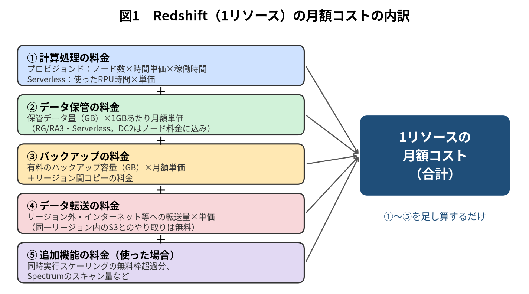
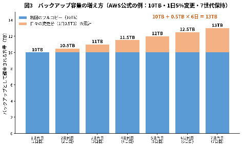
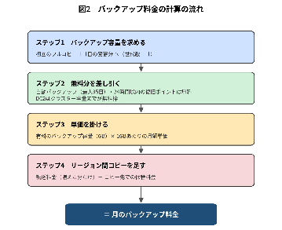

技術的な詳細・根拠・出典URLは別紙「AWS Redshift 概要とコスト算出手法」を参照： 技術詳細版
1. 要約（1ページサマリー）
Redshift（AWSのデータ分析用データベース）の月額コストは、次の要素の「足し算」で決まります。
- ① 計算処理の料金：ノード（サーバー）の台数 × 時間単価 × 稼働時間。Serverless型は「使った処理量（RPU時間）× 単価」。止めている時間は課金されません。
- ② データ保管の料金：保管しているデータ量（GB）× 1GBあたりの月額単価。
- ③ バックアップの料金：有料のバックアップ容量（GB）× 1GBあたりの月額単価 ＋ 別リージョンへのコピー料金。
- ④ データ転送の料金：AWSの外や別リージョンへデータを送った量 × 単価（同じリージョン内のS3とのやり取りは無料）。
- ⑤ 追加機能の料金（使った場合のみ）：同時アクセス急増時の自動増強（無料枠を超えた分）や、外部データの検索量に応じた料金。
バックアップ料金で最も重要な点：自動バックアップは無料ですが、「手動バックアップ」は有料で、元のサーバーを削除した後も、バックアップを削除するまで課金が続きます。また、課金されるバックアップ容量は「初回のフルコピー ＋ 日々の変更分 × 保存日数分」で増えていくため、保存する世代数（日数）とデータの変更量が料金を左右します。

2. 月額コストの計算式（1リソースあたり）
2-1. プロビジョンド型（サーバーを台数で確保する方式）
| ステップ | 計算式 | 数字の意味・入手先 |
|---|---|---|
| ステップ1 | 計算処理の料金 ＝ ノード台数 × 1時間あたりの単価 × 月の稼働時間 | 台数・種類：AWS管理画面／単価：公式料金ページ。一時停止中の時間は除く。2つのデータセンターに冗長化（Multi-AZ）する場合は ×2 |
| ステップ2 | データ保管の料金 ＝ 保管データ量（GB）× 1GBあたりの月額単価 | データ量：AWS管理画面・監視ツール（CloudWatch）。※DC2型はノード料金に含まれるため0円 |
| ステップ3 | バックアップの料金 ＝ 3章の計算結果 | 3章を参照 |
| ステップ4 | データ転送の料金 ＝ 転送量（GB）× 1GBあたりの転送単価 | 転送量：利用状況から想定／単価：AWSのデータ転送料金 |
| ステップ5 | 追加機能の料金 ＝（自動増強の使用時間 － 無料枠）× 1秒あたり単価 ＋ 外部データ検索量（TB）× 1TBあたり単価 | 無料枠：稼働24時間ごとに1時間分（最大30時間まで貯まる）。使わなければ0円 |
| 合計 | 月額コスト ＝ ステップ1 ＋ ステップ2 ＋ ステップ3 ＋ ステップ4 ＋ ステップ5 |
※1年・3年の長期契約（リザーブド）にすると割引されますが、サーバーを止めていても期間中ずっと課金されます。
2-2. Serverless型（使った分だけ払う方式）
| ステップ | 計算式 | 数字の意味・入手先 |
|---|---|---|
| ステップ1 | 計算処理の料金 ＝ 使った処理能力（RPU）× 使った時間（時間）× 1RPU時間あたりの単価 | RPU＝処理能力の単位。1回あたり最低60秒分は課金。何もしていない時間は0円。実績はシステムの利用履歴（SYS_SERVERLESS_USAGE）で確認 |
| ステップ2 | データ保管の料金 ＝ 保管データ量（GB）× 1GBあたりの月額単価 | プロビジョンド型と同じ単価体系 |
| ステップ3 | バックアップの料金 ＝ 3章の計算結果 | 24時間以内の自動復旧ポイントは無料 |
| ステップ4 | データ転送の料金 ＝ 転送量（GB）× 転送単価 | プロビジョンド型と同じ |
| 合計 | 月額コスト ＝ ステップ1 ＋ ステップ2 ＋ ステップ3 ＋ ステップ4 | 自動増強・外部データ検索は①に含まれ、別料金なし |
※月の使用量に上限（最大RPU時間）を設定でき、「上限 × 単価」が計算処理料金の最大額の目安になります。
3. バックアップ料金の計算方法（詳細）
3-1. 無料のバックアップ・有料のバックアップ
| 種類 | 料金 | ポイント |
|---|---|---|
| 自動バックアップ（プロビジョンド型） | 無料 | 最大35日まで保存可能。期限が来ると自動削除 |
| 自動復旧ポイント（Serverless型・24時間以内） | 無料 | 30分ごとに自動作成、24時間保持 |
| 手動バックアップ | 有料 | 削除するまで課金。元のサーバーを削除・停止しても課金が続く |
| DC2型のバックアップ | クラスター容量までは無料 | クラスターの容量を超えた分が有料 |
| 別リージョンへのコピー | 有料 | 転送料（増えた分のみ、コピー元で課金）＋コピー先での保管料 |
3-2. バックアップ容量はどう増えるか
バックアップは毎回まるごと保存されるのではなく、2回目以降は「変わった部分だけ」が追加されます（増分方式）。そのため、課金される容量は次の式で見積もれます。
バックアップ容量 ＝ 初回のフルコピー ＋ 1日の変更分 ×（保存する世代数 － 1）
AWS公式料金ページの例（データ10TB、毎日5%（0.5TB）変更、毎日1世代・7世代保存）では、10TB ＋ 0.5TB × 6 ＝ 13TB となり、公式例の「13TB」と一致します。

※この計算式は公式例から読み取れる考え方を整理したものです（AWSが式として明記しているわけではありません）。
3-3. 計算の手順

| ステップ | 計算式 | 数字の意味・入手先 |
|---|---|---|
| ステップ1 | バックアップ容量 ＝ 初回のフルコピー（GB）＋ 1日の変更量（GB）×（世代数 － 1） | フルコピー＝今のデータ量（AWS管理画面）。変更量＝毎日の増分バックアップの大きさ（管理画面で確認可能）。世代数＝社内の保存ルール |
| ステップ2 | 有料のバックアップ容量 ＝ ステップ1 － 無料分 | 無料分：自動バックアップ・24時間以内の復旧ポイント。DC2型はクラスター容量を差し引く（マイナスなら0） |
| ステップ3 | 保管料金 ＝ 有料のバックアップ容量（GB）× 1GBあたりの月額単価 | 単価：公式料金ページの「Backup storage」（リージョンごとに異なる） |
| ステップ4 | リージョン間コピー料金 ＝ 1か月に増えた分（GB）× 1GBあたりの転送単価 ＋ コピー先の保管容量（GB）× コピー先の月額単価 | コピーする場合のみ。初月はフルコピー分の転送が発生 |
| 合計 | 月のバックアップ料金 ＝ ステップ3 ＋ ステップ4 |
4. 計算例（説明用）
※説明用の仮の数値です。実際の単価は公式料金ページ（https://aws.amazon.com/redshift/pricing/）で確認してください。
前提：Serverless型（またはRG型）、データ10TB、毎日5%変更、毎日の手動バックアップを7世代保存（容量はAWS公式例のとおり）。単価は「1GBあたり月額〇〇円」を仮に3円、転送単価を仮に10円として計算します。1TB＝1,024GBで換算。
| ステップ | 計算 | 結果 |
|---|---|---|
| ステップ1 容量 | 10TB ＋ 0.5TB ×（7 － 1）＝ 13TB ＝ 13 × 1,024GB | 13,312GB |
| ステップ2 無料分 | 手動バックアップのため無料分は差し引かない | 13,312GB |
| ステップ3 保管料金 | 13,312GB × 3円（仮） | 39,936円（仮） |
| ステップ4 リージョン間コピー（行う場合） | 転送：0.5TB × 30日 ＝ 15,360GB × 10円（仮）＝ 153,600円 コピー先保管：13,312GB × 3円（仮）＝ 39,936円 | 193,536円（仮） |
| 合計 | 39,936円 ＋ 193,536円 | 233,472円／月（仮） |
※Serverless型・RG型では、上記バックアップ料金とは別に、データ本体（10TB）の保管料金（2章のステップ2）がかかります。
※リージョン間コピーを行わない場合、バックアップ料金はステップ3のみ（例では39,936円・仮）です。
5. 注意点
- 公式ページの記載が明確でない点があります：①DC2型で自動バックアップが無料枠の計算に含まれるか、②RA3型の手動バックアップで重複部分が差し引かれるか、③コピー先リージョンでの保管料金の扱い、④Serverless型で24時間を超えて保持する復旧ポイントの課金方法。
- そのため、見積もりは「多めに（保守的に）」見積もり、運用開始後に実際の請求額やAWS管理画面のバックアップ使用量と照合して補正することを推奨します。
- 単価はリージョンや時期で変わります。最終的な金額は必ず公式料金ページとAWS Pricing Calculatorで確認してください。
- 手動バックアップは削除しない限り課金が続くため、保存期間のルール化と定期的な棚卸しが有効です。
参考
- 別紙（技術詳細版）：「AWS Redshift 概要とコスト算出手法」 技術詳細版
- Amazon Redshift 料金（公式）：https://aws.amazon.com/redshift/pricing/
- Amazon Redshift スナップショットとバックアップ（公式）：https://docs.aws.amazon.com/redshift/latest/mgmt/working-with-snapshots.html
- Amazon Redshift Serverless の課金（公式）：https://docs.aws.amazon.com/redshift/latest/mgmt/serverless-billing.html
- 別リージョンへのスナップショットコピー（公式）：https://docs.aws.amazon.com/redshift/latest/mgmt/cross-region-snapshot-copy.html
バックアップをAWS Backupで取得する場合の費用はこちら。